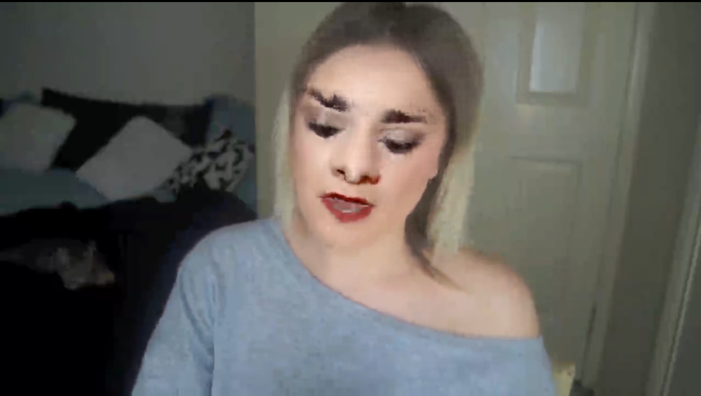

Global context
The MLLM's native visual encoder supplies scene-level semantic features.
NATIVE VISUAL STREAMFORGE: Forensic Reasoning
with Grounded Evidence
A real-or-fake verdict is only the beginning. FORGE connects forensic explanations to the visual details that support them.

“The person's eyebrows look fake. The eyebrows look asymmetric, broken, and drawn on the face…”
Illustrative callouts, not model-predicted bounding boxes.
Pretrained multimodal models can describe an image convincingly while overlooking the small, localized cues that reveal manipulation.
FORGE brings together global semantic context and dense local patch features. The result is a single framework for natural-language forensic reasoning across face-manipulated and fully synthetic images.
The paper investigates an inductive-bias mismatch: image–text alignment emphasizes whole-image semantics, while forensic evidence often lives in localized patches. FORGE adds a vision-only stream, aligns it to the language model with a lightweight adapter, and interleaves spatially corresponding tokens. Two-stage training first establishes general image–language alignment, then specializes the adapter and language model for forensic reasoning. Evaluation covers detection, explanation generation, human judgments, and hallucination rates.
Go from an authenticity judgment to the details behind it.
The person's eyebrows look fake. The eyebrows look asymmetric, broken, and drawn on the face through computer editing.
Eyebrows · asymmetry and broken contours
Precomputed examples from the paper, not a live inference demo. Overlays are illustrative; responses are excerpts or explicitly labeled condensed versions.
Global semantics and local patch evidence meet at matching image locations.
The MLLM's native visual encoder supplies scene-level semantic features.
NATIVE VISUAL STREAMA vision-only encoder preserves patch-level detail. An adapter maps it into the LLM's embedding space.
VISION-ONLY STREAMInterleaved tokens pair complementary features from the same spatial locations.
NO LEARNED FUSION PARAMETERSGeneral image–caption data.
Train the adapter; keep the LLM frozen.
Deepfake question–answer data.
Jointly train the adapter and LLM.
DD-VQA · Face-manipulated images
FORGE · Table 1
vs. 28.9% without the VOM · Table 4
Attribute claims aligned with annotated cues
Region hallucination rate (%) · lower is better
Fraction of explanations that reference an authentic region as manipulated. Bars share a 0–100% scale.
Human ratings · 1–5 scale · higher is better
300 stratified samples, three annotators. Means shown; the paper reports inter-annotator agreement.
Table 2 · Same dataset, complementary visual streams. Accuracy in percent.
| Vision pathway | DD-VQA | DVF |
|---|---|---|
| Native MLLM stream only | 88.19 | 79.88 |
| Vision-only stream only | 90.45 | 77.67 |
| Two streams, concatenation | 93.56 | 92.81 |
| FORGE · aligned interleaving | 94.12 | 94.47 |
Scope. FORGE evaluates image-level reasoning. It does not model temporal anomalies in video. Reported explanation and detection metrics measure different aspects of performance; none alone establishes complete faithfulness.
University of California, Riverside
and Google / YouTube
Architecture, evaluation protocols, ablations, and additional qualitative examples.
Paper & appendix ↗@inproceedings{kundu2026forge,
title = {FORGE: Forensic Reasoning with Grounded Evidence},
author = {Kundu, Rohit and Jia, Shan and Mohanty, Vishal and Balachandran, Athula and Roy-Chowdhury, Amit K.},
booktitle={Findings of the Association for Computational Linguistics: EMNLP 2026},
year = {2026},
}Title and author metadata; see the paper for publication details.